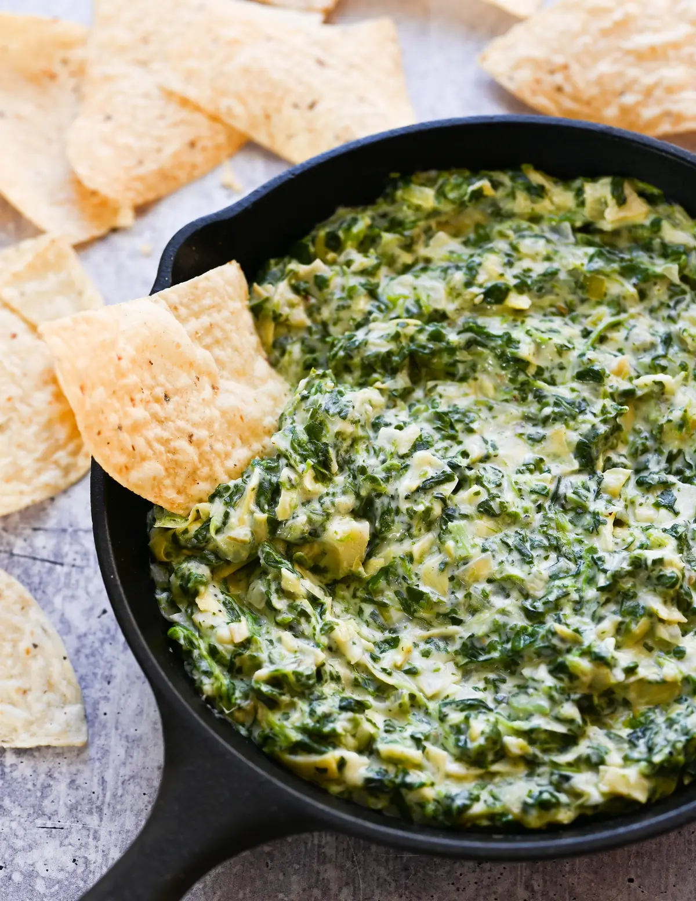

Spinach Artichoke Dip
- Serves6 to 8
- Ingredients16
- Steps4

Ingredients
- Two 10-ounce packages fresh spinach, well rinsed and stems trimmed
- 4 tablespoons unsalted butter
- 1 cup chopped yellow onions
- 1 tablespoon minced garlic
- 1 teaspoon salt
- 1/2 teaspoon freshly ground black pepper
- 1/4 teaspoon cayenne
- 1/4 cup all-purpose flour
- 1 cup milk
- 1 cup heavy cream
- 2 teaspoons fresh lemon juice
- 1 cup 1/2-inch cubes rindless Brie cheese
- One 6 1/2-ounce jar marinated artichoke hearts, drained and chopped
- 4 strips bacon, fried crisp, drained and chopped
- 1/4 cup grated Parmesan cheese
- Assorted chips for dipping (pita chips, tortilla chips, bagel chips)
Directions
- Preheat the oven to 350°F. Lightly grease a 9-inch round chafing dish and set aside.
- Bring a medium pot of water to a boil. Add the spinach in batches and cook until wilted, 2 to 3 minutes. Remove and refresh under cold running water. Squeeze to remove all excess water and chop. Set aside.
- In a medium pot, melt the butter over medium-high heat. Add the onions and cook, stirring, for 3 minutes. Add the garlic, salt, pepper, and cayenne, and cook, stirring, for 1 minute. Add the flour and cook, stirring constantly, to make a light roux, about 2 minutes. Add the milk and cream in a steady stream, and cook, stirring constantly, until thick and creamy, 2 to 3 minutes. Add the spinach and lemon juice, and stir to blend. Add the cubed and grated cheeses, artichoke hearts, and bacon, and stir well. Remove from the heat and pour into the prepared dish. Top with the Parmesan cheese and bake until bubbly, about 10 minutes.
- Remove from the oven and serve hot with chips.
Recipe credit: emerils.com)